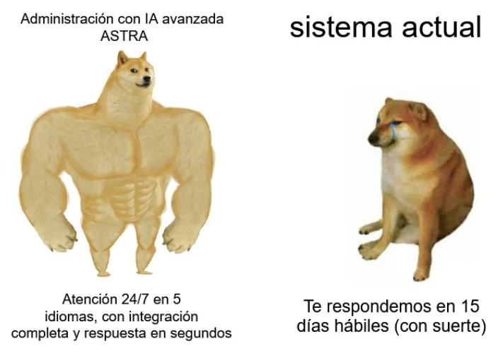

estrategIA #87 ·
Dos velocidades de atención ciudadana
El contexto
ASTRA alude aquí a Project Astra, el proyecto de asistente de Google presentado en la edición de 2025. El meme imagina su aplicación a la atención ciudadana: respuestas inmediatas y en varios idiomas frente a trámites que tardan días. Las prestaciones del cartel forman parte de la comparación, no describen un servicio público ya implantado.
Publicado en: estrategIA #87 - El retorno de Google con el I/O 2025. Pionera de la IA generativa, rezagada por años y ahora a la cabeza de una tecnología que transforma el mundo
Leer el texto de la imagen
Administración con IA avanzada ASTRA sistema actual Atención 24/7 en 5 idiomas, con integración completa y respuesta en segundos Te respondemos en 15 días hábiles (con suerte)